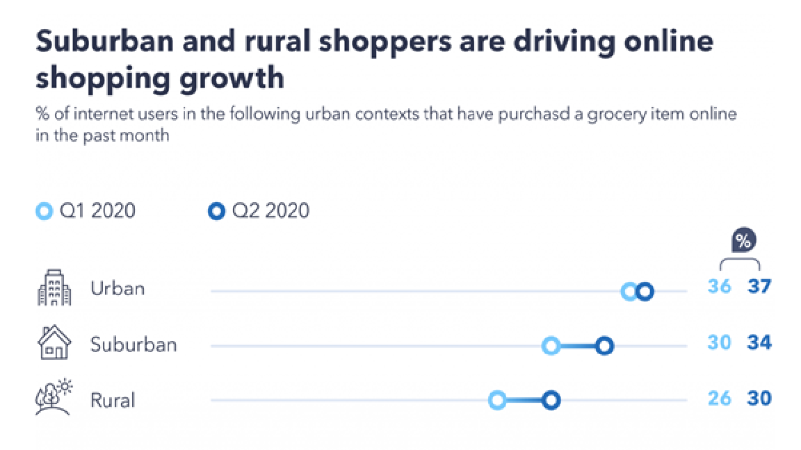

Overview
In this project, I am planning to create a grocery online shopping application on smartphones using any operating system such as IOS, Android. I have not decided the name of this yet but let’s call it PGA (Phong Grocery App).This application helps the customers, users buy groceries, food online much more conveniently without going to the markets. The grocery online shopping application is not just for getting foods, it also suggests the consumers recipes that is probably what they are going to make. This feature is in order to support people easier to get things they want, time-saving for finding materials involved in the recipe.
Motivation
Because the COVID-19 pandemic has had a major effect on people's lives and habits, from social distances to the service of supermarket businesses, the online shopping technology has been invented and produced for the intent and demand of customers. As this global pandemic of coronavirus continues, there is much uncertainty about what the future will hold, all we can do is control the now in our lives. Social distancing is the best way to avoid the transmission of this infection, which is why citizens are limited to public spaces such as markets. Without a grocery online shopping application, the policy of social distancing, people are completely concerned about how they can buy food and beverage. By the beginning of the year the state of the food and beverage sector in the fall of 2020 will be entirely unrecognizable to customers. Thus, with modern maintenance techniques, limited space and partnership with retailers introduced to help customers feel more comfortable in-store the quality of shopping at grocery stores has increased. Far more customers have preferred to keep away from the supermarket entirely, and online grocery options have soaked up this shift in appetite. This is illustrated by the following statistics:
Description
This application is created in order to make a convenience for people to buy food online so there are many features that I want to implement in this platform:
- First of all, the beginners can sign up to create an account using the app account itself or they can sign up connected with others accounts that they have already had such as Facebook or Google accounts. This feature is to define the consumer’s identification and their information including name, date of birth, mobile phone number, address,... This information helps the staff easier to contact and deliver to the right address.
- They can choose different types of payment methods. They can pay by cash or using a debit card, visa card,... The application always wants the users to have the comfort and convenience. For example, the consumers do not have a bank card, they can pay by cash when their order is shipped or when people do not have enough cash in their hand to pay, they can choose paying by card.
- Once they are all done signing up, the next feature is a list of options of different markets. Before using online grocery shopping, they may have had their favourite marketplace so on the app, if there is that marketplace, they can pick it as where they will buy food and beverage from. The application also shows the up-coming marketplace for the consumers to be aware of, and the closing date of several grocery markets. PGA provides a list of marketplaces so the customers can see if there is a better deal for the things they want to buy because there could be a difference of price for a particular product between marketplaces.
- There is also a very interesting feature of this application which is the users can either choose delivery or pickup. Delivery means all the things they selected to buy will be shipped by a staff of a chosen marketplace. And, Pickup means the consumers can choose the food they want to buy at home and then they will drive to the store to pick up things. I think this is a very useful feature because when you are lazy to find the things at the store but you still want to go out or you don’t want to pay for the shipping fee, you totally can come and pick up your own stuff.
- PGA also updates for people the daily coupons, the daily sales and suggests some of popular things that the users would like to see. This helps the consumers save their money and buy things with the best price.
- This application creates different categories of food and beverage for the users to find such as dairy and eggs, fruits, frozen, snacks, beverages, meat and seafood. For instance, you want to buy a bottle of wine, you can go to the wine category and then there are tons of options for people to choose. Or another example, you want to buy fruits, you can go to the fruits category, etc.
- The users may want to buy very quickly, there is an extremely convenient feature which is Search. Search allows people to type the thing they want and then the application will automatically show it up. For example, you are looking for an apple, the fastest way is just go to Search and type “apple” and then select the type of apple you want to buy then it’s all done. The feature is really helpful and time-saving for consumers.
- Last but not least, I think the feature which I am going to say is one of the most out-standing features is recipe. Once the users have selected the thing they want, PGA will provide them several recipes related to it. For example, you choose pasta, you are suggested recipes including other materials and using pasta in it such as carbonara, spaghetti, pesto. This feature helps the users to get food quickly and suggests the consumers try new things.
Tools and Technologies
Obviously, to build this application, we need to have a computer and wifi. Since I have said above that this application can be downloaded on smartphones using any operating system such as IOS, Android, Google,etc. So the first thing I come up with in my mind is a cross-platform tool for app development. A cross-platform app allows people to download on any operating system of their smartphones: people who use Iphone using IOS operating system can download PGA, consumers who use Samsung using Android operating system are definitely able to download. I have researched and found a tool that can be seen as the best app development software and used by many big companies in the app development industry such as Facebook, Instagram, Walmart, Soundcloud which is React Native. React Native uses JavaScript to build software as a programming language. The advantage of this cross-platform tool is that programmers can write modules in languages like C, Swift, and Java. In addition, the most out-standing feature of this tool is that you are able to edit images and video manipulation that is not feasible for other API systems. [2]
Skills Required
So React Native is the cross-platform tool for PGA (this grocery shopping online application) and it uses Javascript as the programming language. First is studying, getting more knowledge about Javascript, it will help the operation of app development be convenient, easy and fluent. Secondly, do some research about how React Native works. Thirdly, the structure and appearance of application also plays a very important role in deciding the success for the project because through the appearance, the consumers may find whether it is easy to see, use or not. So practice designing is extremely necessary.
Outcome
The coronavirus impacts hugely to our lifestyle, PGA is definitely a very essential application for people to buy food and beverage since everybody has to be social-distancing. With online grocery shopping, indolent people or people who have enough time to go grocery shopping, it is time-saving, they can spend time for other activities. People no longer need to go to places where people are completely possible getting an infection of COVID-19. This application is not just to improve our life, it also reduces cases of coronavirus, bring back normal life for people in particular and the operation of a country in general. If the project is successful, it will definitely be a good sign and a positive improvement for IT.